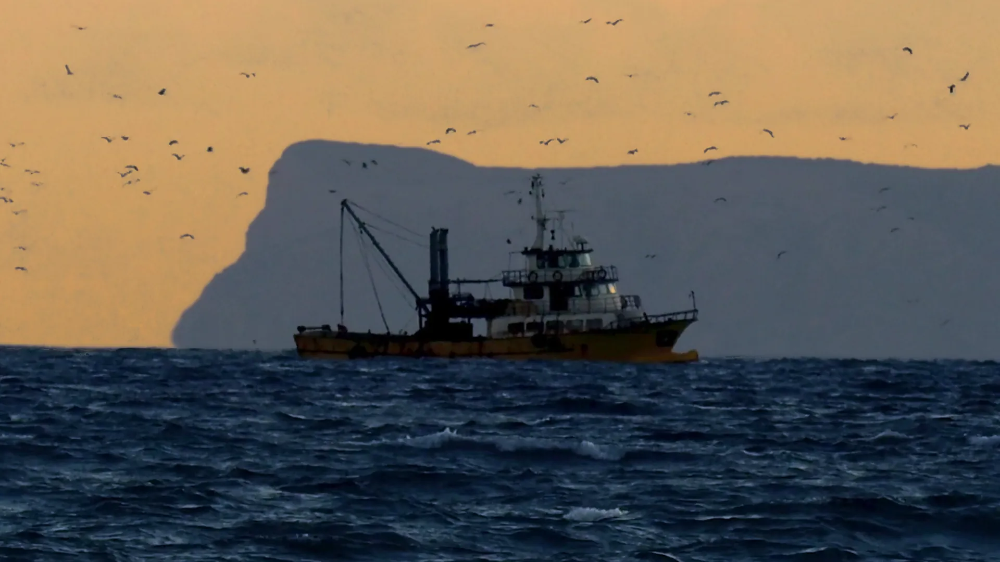
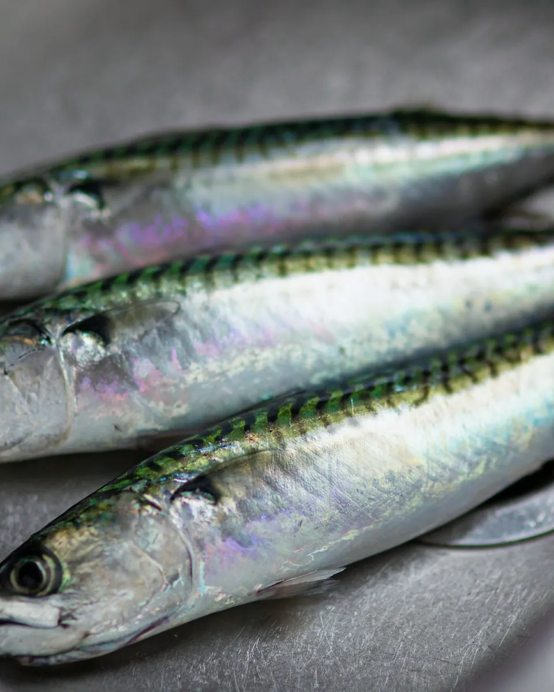
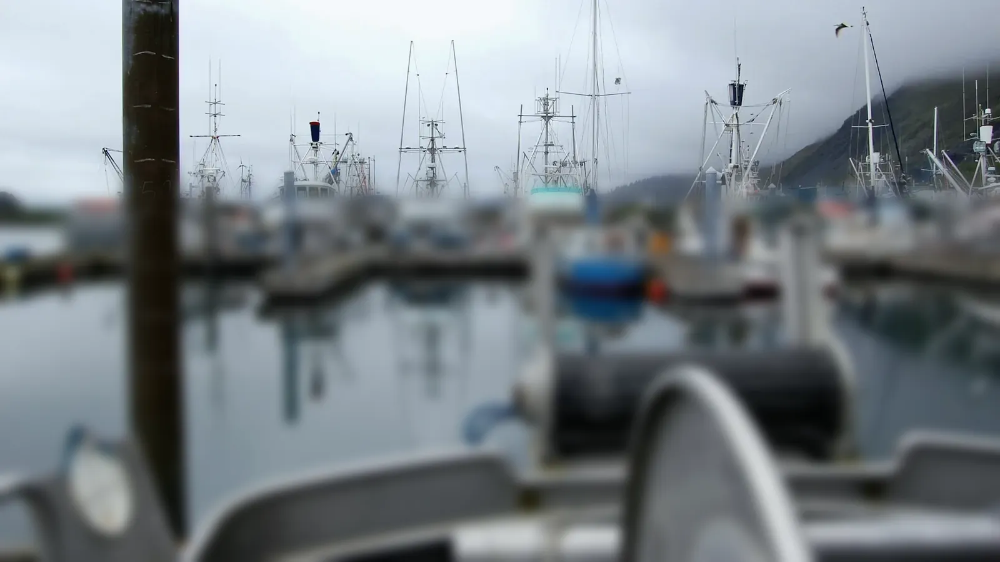
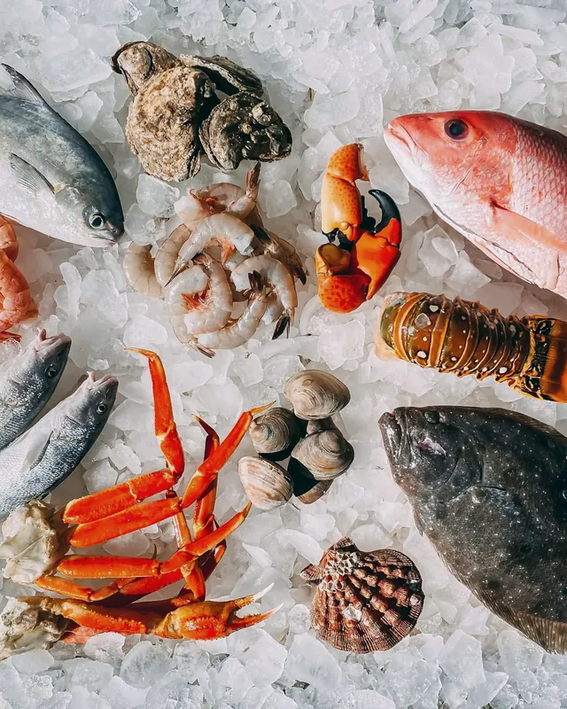
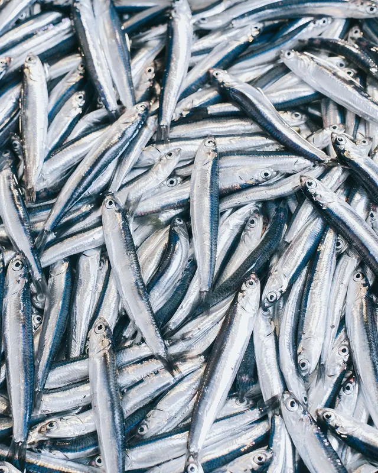
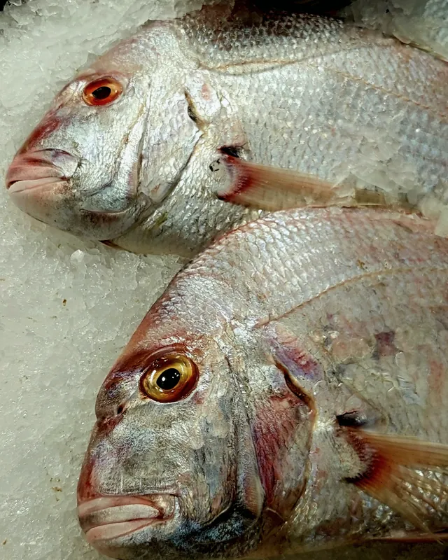
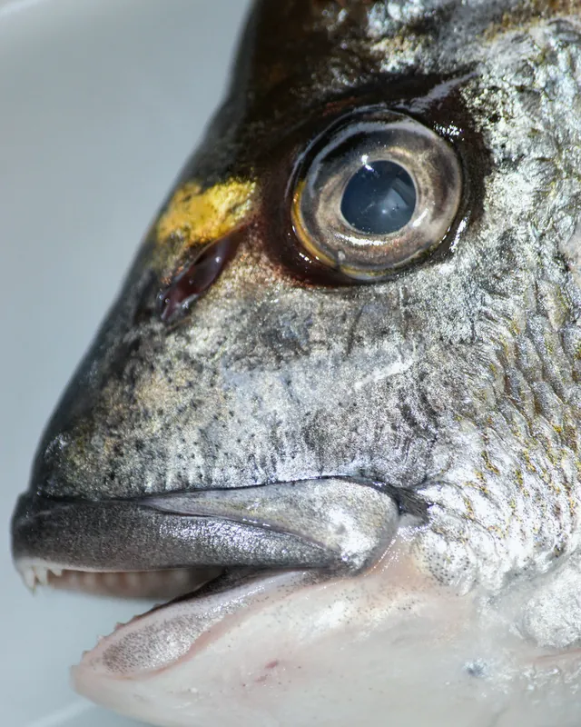
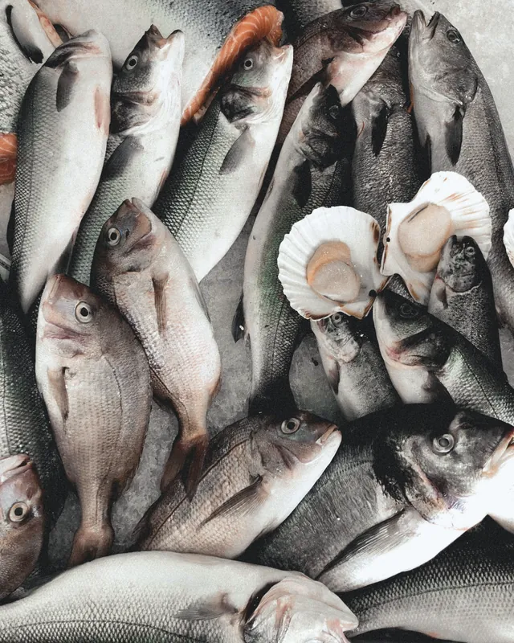
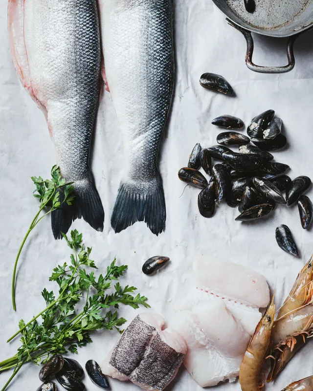

Amu · trazabilidadNº 0412
- Especie
- Merluza
- Nombre científico
- Merluccius merluccius
- Zona
- FAO 27 · VIII c · Cantábrico
- Arte
- Anzuelo · palangre
- Desembarque
- Hoy, 05:40
- Precio
- 24,90 €/kg
Fresco · de 0 a 4 °C

Del puerto a tu cocina, el mismo día.
Desembarcado hoy · 05:40
Pescado de anzuelo y de bajura del Cantábrico. Te lo limpiamos, lo fileteamos y te decimos cómo hacerlo.
Género de hoy
Lo que hay en el mostrador, con su precio por kilo. Cambia cada día según lo que llega a la lonja.
Género y precios de ejemplo: en tu web, los tuyos, al día.
Cada pieza lleva su etiqueta: de dónde viene, cómo se pescó y a qué hora llegó.

En el mostrador
Dinos cómo lo vas a hacer y lo preparamos al momento.
Limpio y sin escamasEntero, listo para la parrilla o el horno.
En lomos o filetesSin espinas, para la plancha o en salsa.
En rodajasDel grosor que nos digas, para la cazuela.
Abierto a la espaldaComo el besugo o la lubina a la donostiarra.
Para el hornoLimpio, con sus cortes y la sal justa.
Sin espinas ni pielPara los pequeños de casa.
Fotos de Unsplash
Encargos
Si vas con prisa o quieres asegurarte una pieza, déjalo encargado. Te lo tenemos preparado y pesado.
En Navidad, encarga el besugo, las kokotxas y el marisco con una semana de antelación.

Del barco al mostrador
Compramos cada mañana en las lonjas de la costa: lo que llega de madrugada, a primera hora está en el mostrador.
Galería






Fotos de Unsplash
Horario
Mar a vie, 8:00–14:00 y 17:00–20:00 · Sáb, 8:00–14:00
| Lunes | Cerrado |
|---|---|
| Martes | 8:00–14:00 · 17:00–20:00 |
| Miércoles | 8:00–14:00 · 17:00–20:00 |
| Jueves | 8:00–14:00 · 17:00–20:00 |
| Viernes | 8:00–14:00 · 17:00–20:00 |
| Sábado | 8:00–14:00 |
| Domingo | Cerrado |
Cómo llegar
Al cargar el mapa, tu navegador se conecta con Google.
Texto de ejemplo: en tu web, dónde aparcar para cargar el encargo y qué autobuses paran cerca.